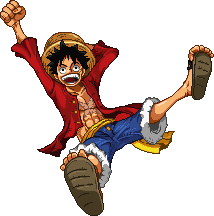

ルフィ
モンキー・D・ルフィは、人気アニメ・マンガ『ワンピース』の主人公で、ゴムゴムの実の能力を持つ海賊です。彼は海賊王を目指し、仲間たちと共に壮大な冒険を続けています。
特徴
- ゴムゴムの味の超リーチの判定
- 弱やDAの判定と吹き飛ばしが強い
- 下Bの弾き返しや上昇で復帰のタイミングをずらせる
- ゴムゴムの味で伸ばした体にも当たり判定があるため思わぬ被弾や、飛び道具に弱い
- 全体的に技の発生が遅く、至近距離戦になると分が悪い
- おだワド選手(日本)
強い点
弱い点
有名な使い手
モンキー・D・ルフィは、人気アニメ・マンガ『ワンピース』の主人公で、ゴムゴムの実の能力を持つ海賊です。彼は海賊王を目指し、仲間たちと共に壮大な冒険を続けています。
強い点
弱い点
有名な使い手